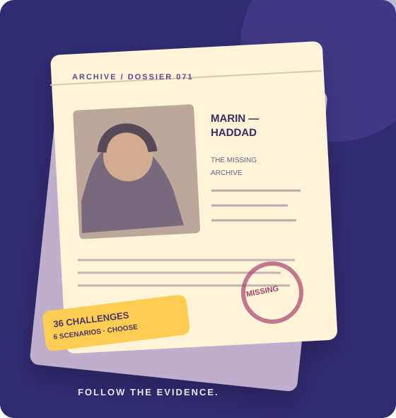

Recuperare le tracce
Archivi, fotografie, mappe e registri aiutano a identificare i pezzi mancanti.
Sei luoghi, trentasei sfide, una storia familiare da ricostruire. Un’esperienza sulla ricerca delle fonti e sulla responsabilità di raccontare il passato.
Il dossier della famiglia Marin–Haddad è scomparso prima dell’apertura di una mostra. Chi gioca attraversa la città, ricostruisce documenti, ascolta testimonianze e prende decisioni sulla restituzione pubblica di memorie complesse.

Archivi, fotografie, mappe e registri aiutano a identificare i pezzi mancanti.
Confrontare testimonianze, riconoscere omissioni e individuare manipolazioni.
Decidere come presentare al pubblico fatti, incertezze e storie diverse.
È un’esperienza digitale dimostrativa. I personaggi e il dossier della narrazione sono fittizi.
Costruiamo nuove esperienze interattive per scuole, archivi e musei.